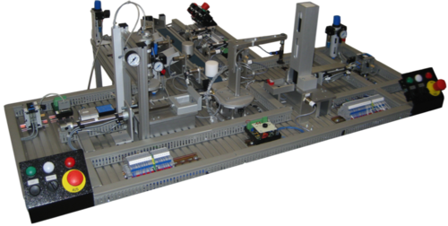

SPP-wide case studies
We propose two joint case studies to advance the inter-project cooperation, which together cover the application domains in the focus of the SPP.
The Common Component Modelling Example (CoCoME)
For the domain of business information systems and embedded systems, we propose an extension of CoCoME (http://www.cocome.org). CoCoME includes a case study in terms of a cash desk with an associated stock management for supermarkets. Hence, fragments of embedded systems (cash desk) and business information systems (stock management) are integrated into CoCoME. The case study has been deployed as an international benchmark for component-based modelling approaches in CoCoME before. Functional/non-functional requirements and architectures of the system are documented and modelled in various languages. Additionally, an implementation with test cases and documentation exists.
Publications
|
The CoCoME Platform for Collaborative Empirical
Research on Information System Evolution
Document number: 2016,2; Karlsruhe Reports in
Informatics
Karlsruhe Institute of Technology,
2016
|
|
The CoCoME Platform: A Research Note on Empirical
Studies in Information System Evolution
International Journal of Software Engineering and Knowledge Engineering, 25(09&10):1715-1720
2015
|
|
A Platform for Empirical Research on Information
System Evolution
2015 International Conference on Software Engineering and Knowledge Engineering
(SEKE 2015)
2015
|
|
Architecture-based Analysis of Changes in
Information System Evolution
17th Workshop Software-Reengineering and Evolution
2015
|
|
Architecture-based Assessment and Planning of
Software Changes in Information and Automated Production Systems
IEEE International Conference on Systems, Man, and Cybernetics (SMC 2015)
Hongkong, China
2015
|
Pick and Place Unit (PPU)
As case study for the domain of production systems in automation engineering, we propose to use a laboratory plant. One possibility is to use the Pick and Place Unit of the Chair AIS of the Technische Universität München.
For more details on the PPU please visit https://www.ais.mw.tum.de/en/research/equipment/ppu/
- 
- Pick and Place Unit (image source: www.ais.mw.tum.de)
Publications
|
Fault handling in PLC-based Industry 4.0 automated
production systems as a basis for restart and self-configuration and its
evaluation
Journal of Software Engineering and Applications, 9(1):1--43
2016
|
|
Interdisciplinary Product Line Approach to Increase
Reuse (Interdisziplinärer Produktlinienansatz zur Steigerung der
Wiederverwendung)
Automatisierungstechnik (at), 63(2):99--110
2015
|
|
Evolution of software in automated production
systems - Challenges and Research Directions
Journal of Systems and Software,
2015
to be published
|
|
Architecture-based Assessment and Planning of
Software Changes in Information and Automated Production Systems
IEEE International Conference on Systems, Man, and Cybernetics (SMC 2015)
Hongkong, China
2015
|
|
Engineering Support in the Machine and Plant
Manufacturing Domain through Interdisciplinary Product Lines: An Applicability
Analysis
15th IFAC Symposium on Information Control in Manufacturing (INCOM)
Ottawa, Kanada
2015
|
|
Evaluating reconfiguration abilities of automated
production systems in Industrie 4.0 with metrics
20th IEEE International Conference on Emerging Technologies and Factory
Automation (ETFA) , page 1--6.
Luxembourg, Luxembourg
2015
|
|
Selected Challenges of Software Evolution for
Automated Production Systems
13th International Conference on Industrial Informatics (INDIN 2015)
Cambridge, UK
2015
|
|
Anforderungen an die Softwareevolution in der
Automatisierung des Maschinen- und Anlagenbaus
Automatisierungstechnik (at), 62(3):163--174
2014
|
|
Challenges of Parallel Evolution in Production
Automation Focusing on Requirements Specification and Fault Handling
Automatisierungstechnik (at), 11(62):755--826
2014
|
|
Researching Evolution in Industrial Plant
Automation: Scenarios and Documentation of the Pick and Place Unit.
Technical Report
Document number: TUM-AIS_TR-01-14-02
Institute of Automation and Information, Technische Universität München,
2014
|
|
Evolution in Industrial Plant Automation: A Case
Study
39th Annual Conference of the IEEE Industrial Electronics Society (IECON 2013) ,
page 4386--4391.
Vienna, Austria
2013
|